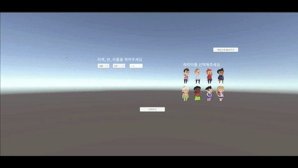

May Rhee
May Rhee
SELECTED WORK / METAVERSE · VIRTUAL EVENTS
SSAFYLand
A shared virtual-event space with stages, games, exhibition areas and social activities.
A closer look at the process and the work.

THE BIG PICTURE
A little about the project.
SSAFYLand explores ways to make a remote community event more participatory. Attendees move around virtual spaces, take part in activities and experience exhibitions together.
Read project README ↗01 / SSAFYLAND
Enter the virtual venue
The lobby welcomes visitors into a shared event space.
02 / SSAFYLAND
Meet, watch and play
Visitors gather at a stage and join participatory games such as OX quiz activities.
03 / SSAFYLAND
Explore together
The Forest of Patience, treasure hunt and photo zone provide opportunities for playful interaction.
04 / SSAFYLAND
Exhibition Hall
A virtual gallery enables visitors to experience an exhibition inside the same shared world.